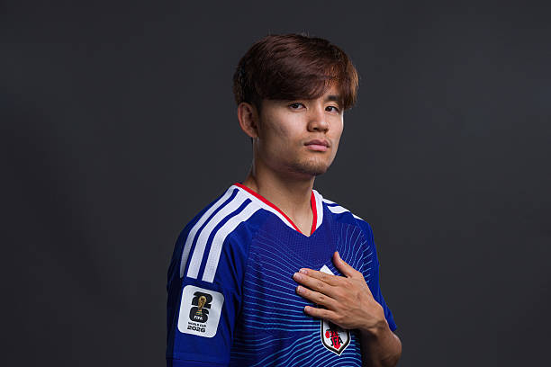

世界を魅了する日本の至宝
レアル・ソシエダで圧倒的な存在感を放つレフティ、久保建英の公式ファン紹介ページです。
最新の活躍と注目ポイント
久保建英選手は、現在スペインのラ・リーガに所属するレアル・ソシエダで主軸として活躍を続けています。右サイドからの鋭いカットインや、精密なスルーパス、そして高い決定力でチームの攻撃を牽引。UEFAチャンピオンズリーグでの活躍をはじめ、世界最高峰の舞台で日本人の価値を高め続けています。
彼の強みは、単なる技術の高さだけでなく、相手ディフェンダーの逆を取る圧倒的なアジリティと戦術眼にあります。スペイン語も流暢に操り、ピッチ内外でチームの中心的役割を果たしている姿は、まさに新世代の日本人アスリートの象徴と言えます。